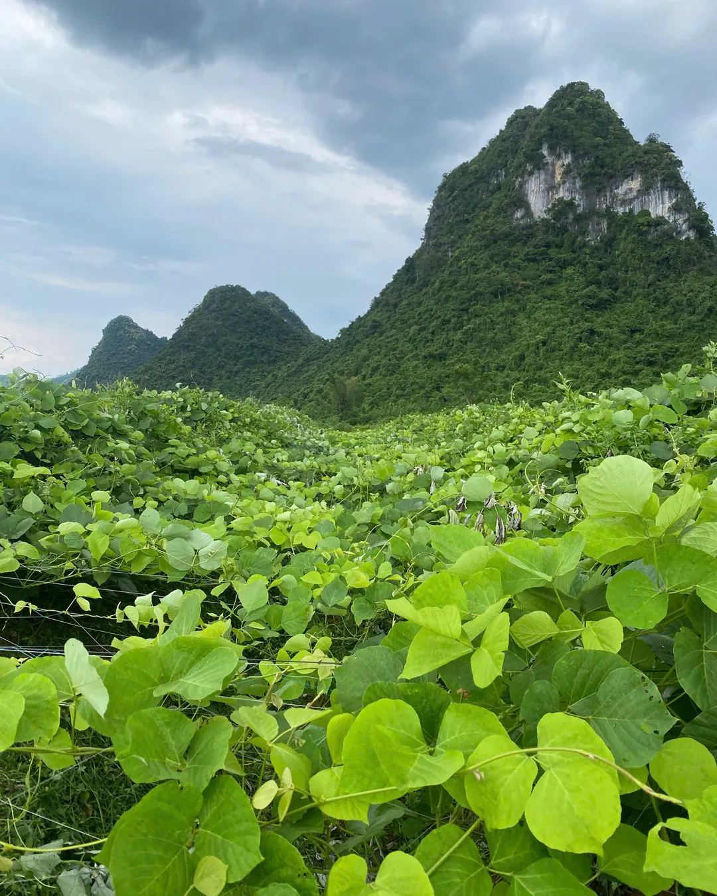
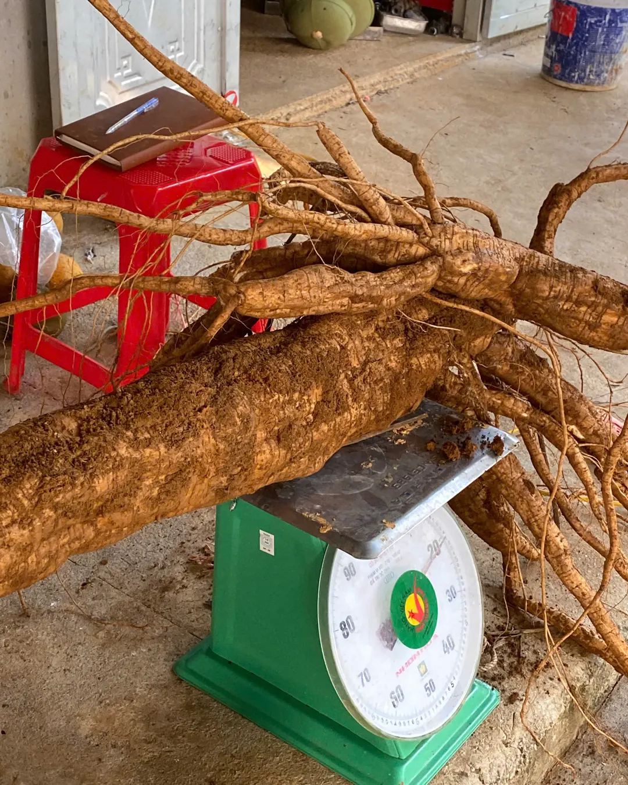
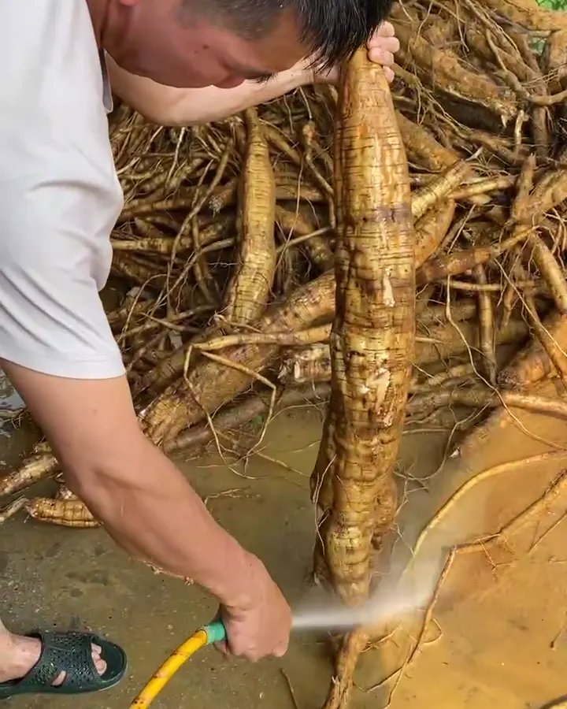
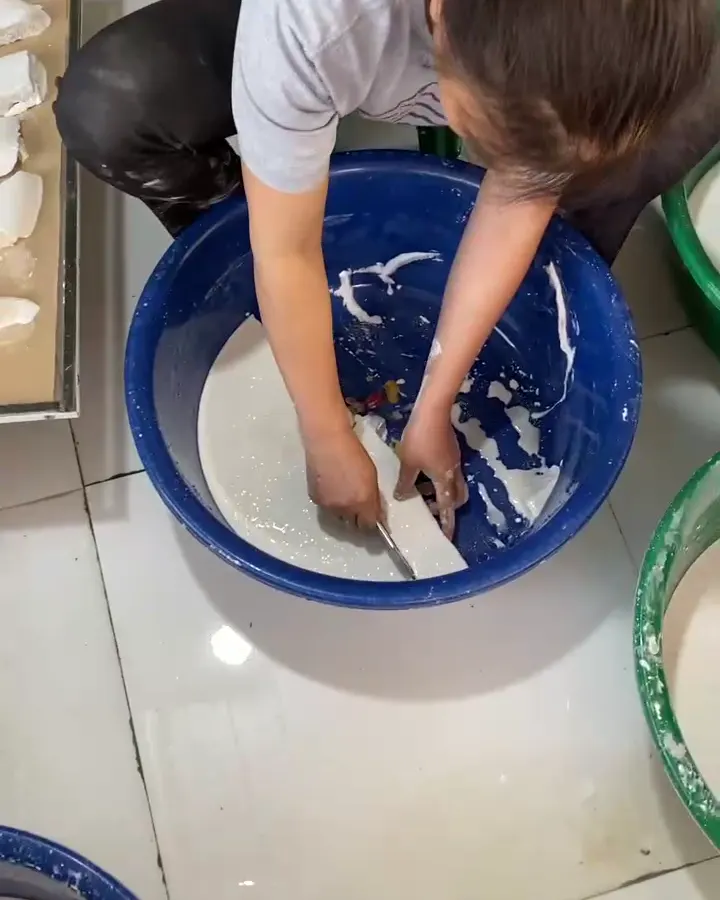
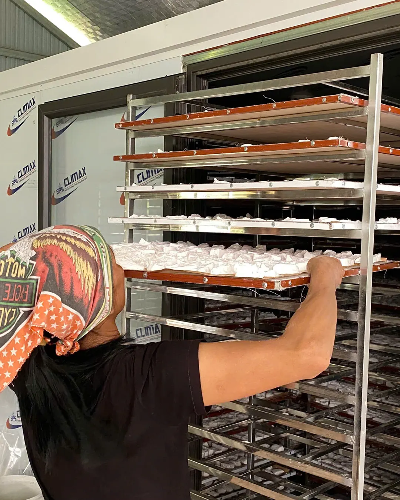
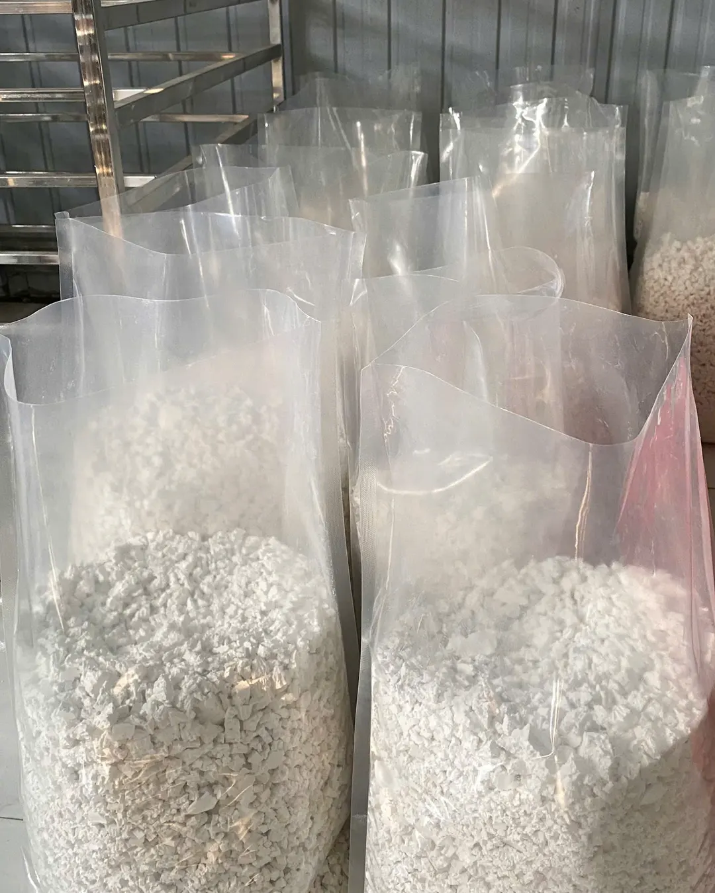

Kudzu Root Starch
For cooling drinks, desserts and baking. Naturally white, no bleaching, no additives.
- 0.5 kg bagRetail, Vietnam delivery80,000 VND
- 1 kg bagRetail, Vietnam delivery155,000 VND
- 5 kg / 10 kgWholesale & exportAsk us
Whole roots dug up, filtered many times, dried in a temperature-controlled kiln. No bleaching, no additives. Plus VietGAP-certified Canh mandarins in season, from The Hung Organic Cooperative in Lang Son, Vietnam.

Retail prices are for delivery within Vietnam. For export, wholesale packs (5 kg / 10 kg) and samples, contact us directly.
For cooling drinks, desserts and baking. Naturally white, no bleaching, no additives.

Ripened naturally on the tree. Harvest season roughly November–January (lunar calendar). Fresh fruit, delivered within Vietnam only.

The white comes from filtering and settling many times, not from bleach.
Scroll slowly to follow the cooperative from field to bag, and from blossom to box. Every photo was taken in our own fields and workshop.
Six steps from the limestone hills of Vu Lang to the bag in your kitchen.

Vines climb the trellis while the roots grow underground.

Brought to the workshop the same day.

Pressed for the starch milk.

Many times, until pure and white.

A preset temperature dries it evenly, rain or shine.

Keeping its natural white color.
A full year on the tree, picked only when the fruit is ready. Sold within Vietnam only.

The trees put out tiny flower buds.

White blossoms, gently fragrant every morning.

Petals fall and the fruit grows for months.

No ripening agents: we wait until it's ready.

Around November to January (lunar calendar), fruit by fruit.

Packed with care the same day, shipped across Vietnam.
About our Canh mandarins. Translated from verified-purchase reviews on Shopee last season, names partly hidden.
“Really tasty, sweet, fresh and nicely selected, great price. Had I known the quality was this good, I'd have ordered twice as much.”
“Sweet, thin-skinned, juicy. Totally different from the oranges I buy elsewhere.”
“The oranges arrived still really fresh. Mildly sweet and easy to eat.”
“Received after 2 days. Juicy and sweet, will order again once we finish them.”
“Packed in a fairly sturdy foam box; sweet, tasty oranges.”
“Very tasty and juicy, just the right sweetness, thin skin, fair price.”
Source: Shopee shop “Cam Đường Canh TH”, 2025–2026 season.
See all reviews on Shopee ↗Real footage of every step: growing, harvesting, grinding and filtering, drying, packing. Vietnamese narration with English subtitles.
Request a quote
Kudzu fields and mandarin orchards among the limestone hills. Real photos from Vu Lang commune, Lang Son province.


Kudzu Root Starch is fully dried and shelf-stable, so it's available year-round. Canh Mandarin Oranges are fresh fruit, harvested only in season (roughly November to January, lunar calendar).
Retail orders ship nationwide within Vietnam. For international/export orders (Kudzu Root Starch only), contact us via WhatsApp or email to discuss shipping method, quantity, packaging and samples.
Canh Mandarin Oranges are VietGAP certified (certificate No. 112/CN-TĐC-TT-20-0012, issued by NATEK JSC, valid until 22 Dec 2028). Documentation for Kudzu Root Starch will be published here once the cooperative completes its paperwork. We only list what we can show on paper.
Yes. The cooperative supplies 5 kg and 10 kg wholesale packs and welcomes export inquiries for Kudzu Root Starch. Message us to discuss quantity, pricing and packaging.
Retail, wholesale or export: message us and the cooperative will get back to you with prices, packaging options and shipping.